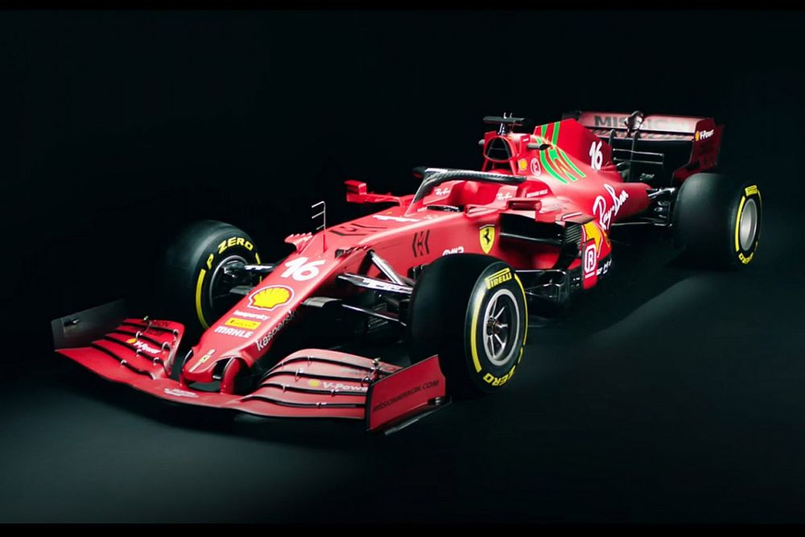

A Scuderia Ferrari olasz Formula–1-es versenycsapat, a sportág eddigi legsikeresebbje, a világbajnokság kezdete, 1950 óta jelen van a Formula–1-ben. Enzo Ferrari alapította 1929-ben a Scuderia olaszul istállót jelent, a Ferrari az alapító Enzo Ferrari nevére utal, és 1939-ig az Alfa Romeo autóit versenyeztette. Csak később kezdtek saját autókat készíteni.
2007-ben megnyerték az egyéni (Räikkönen) és a konstruktőri bajnoki címet is. Utóbbit 2008-ban megvédték, az egyéni címről viszont Felipe Massa a zárófutam utolsó körében lecsúszott. 2010-ben Fernando Alonso volt harcban a bajnoki címért, listavezetőként várta az utolsó versenyt, de a futam nem sikerült, így alulmaradt a Red Bull Racingnél versenyző Vettellel szemben. 2012-ben Alonso ismét a zárófutamig volt esélyes a címre, de ezúttal is Vettel nyerte a bajnokságot. 2014-ben gyenge szezont zárt a csapat, 1993 óta első ízben fordult elő, hogy egész évben nem sikerült futamot nyerniük. 2015-ben Vettel révén három futamot nyertek, a konstruktőri világbajnokságban második helyen zártak a Mercedes mögött. 2016-ban viszont megint nem tudtak futamgyőzelmet elérni, a konstruktőrök között visszacsúsztak a harmadik helyre a Red Bull mögé. 2017-ben a Ferrari a megelőző évekhez képest versenyképesebbnek bizonyult, Vettel sokáig esélyesnek tűnt a Mercedesszel szemben, de a szezon későbbi szakaszában túl sok pontot vesztett, ami miatt elszálltak a világbajnoki reményei. A 2018-as szezont még biztatóbban kezdte a Ferrari, de az év későbbi szakaszában ismét többször hibázott Vettel és a csapat, így ezúttal sem sikerült a világbajnoki cím megszerzése. 2019-ben a motort szabálytalannak minősítették, így 2020-ban jelentősen hátra csúsztak a mezőnyben. 2021-ben a csapat pilótái: Carlos Sainz Jr. És Charles Leclerc. A csapat legsikeresebb versenyzője a hétszeres világbajnok Michael Schumacher, aki öt egyéni bajnoki címet szerzett a Ferrarinak az összes tizenötből.
